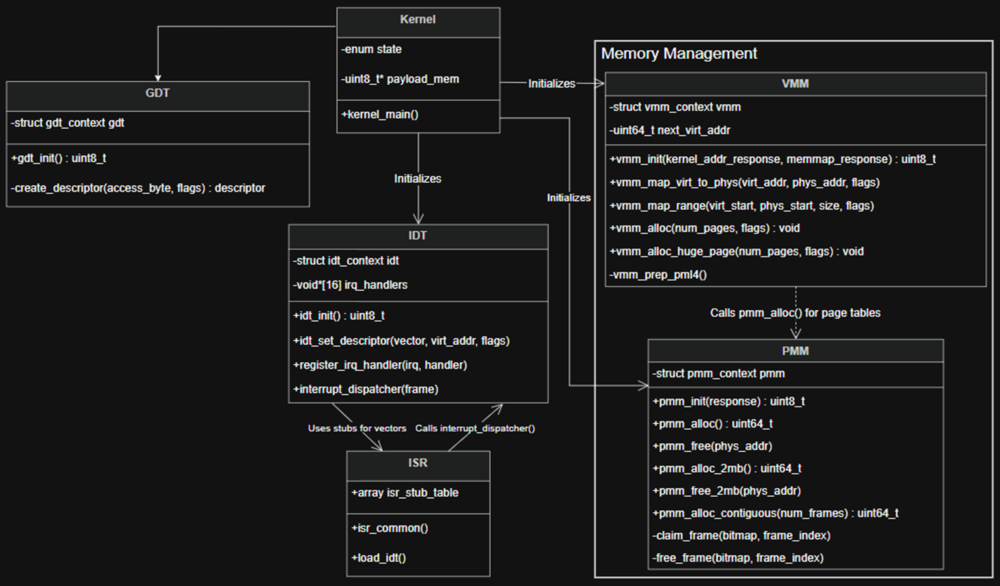

CORE COMPONENTS
This section details the foundational x86-64 data structures and initialization routines that establish the unikernel environment.
{kind=link}

Visual mapping of the GDT, IDT, system initialization sequence, and Memory Manager.
gtd.c (Global Descriptor Table)
Overview
The Global Descriptor Table (GDT) is a core x86 data structure that defines the memory segments used during program execution. In 64-bit long mode, the legacy concepts of memory “segmentation” (base and limits) are largely ignored by the CPU, but a valid GDT is still strictly required to define the execution privileges (ring levels) and segment types. This module sets up a foundational 64-bit flat memory model for the unikernel. It initializes three required segments: a Null descriptor, a Ring 0 Kernel Code segment, and a Ring 0 Kernel Data segment. It also provides the underlying assembly routine to load the table pointer into the CPU and perform a far jump to flush the legacy segment registers.
System Integration & Initialization
Within the unikernel’s boot sequence, the GDT is initialized in kernel_main() immediately following the Limine bootloader handshakes and the legacy PIC remapping (pic_remap(32, 40)). It serves as the primary hardware initialization step, strictly preceding the setup of the Interrupt Descriptor Table (IDT), Physical Memory Manager (PMM), and Virtual Memory Manager (VMM). The kernel tracks the successful initialization of the GDT using a bitwise state flag (init_status |= gdt_init()). If the GDT fails to initialize, the kernel will print a failure log and immediately halt the CPU via hcf(). Hardware interrupts are safely enabled only after the GDT and all other boot structures are fully validated.
Application Example
The following example demonstrates how the GDT is invoked during the kernel’s early boot sequence.
#include "headers/kernel_api.h"
#include "headers/gdt.h"
void kernel_main(void) {
uint16_t init_status = 0;
// ... Limine handshakes and PIC remapping ...
// Initialize the GDT and track its success state
init_status |= gdt_init();
// Proceed with further architectural setup
init_status |= idt_init();
init_status |= pmm_init(memmap_request.response);
// Validate GDT initialization
if(init_status & GDT_INIT_SUCCESS) {
PRINTS("READY: GDT has been initialized and loaded.\n");
} else {
PRINTS("ERROR: GDT initialization failed.\n");
hcf(); // Halt CPU on fatal error
}
}
Direct API References:
Macros
GDT_INIT_SUCCESS: Evaluates to 2 (1<<1). Returned upon successful loading and flushing of the GDT.
Data Structures
typedef uint64_t descriptor: Represents a single, raw 64-bit entry within the Global Descriptor Table.struct gdt_ptr: The highly specific, packed pointer structure required by the lgdt CPU instruction to locate and load the table.Fields:
uint16_t limit: The total size of the GDT in bytes, minus 1.uint64_t base: The 64-bit linear memory address pointing to the first entry of the GDT array.
struct gdt_context: A state container that holds both the active descriptor array and its corresponding CPU pointer.Fields:
descriptor entries[3]: The array of GDT entries (Null, Code, Data).struct gdt_ptr pointer: The pointer structure referencing the entries array.
Functions
uint8_t gdt_init(): Initializes the Global Descriptor Table context. It populates the Null, Kernel Code (0x9a access, 0xa flags), and Kernel Data (0x92 access, 0x0 flags) descriptors using specific access bytes and flags required for x86-64 long mode. It calculates the table limit, sets the base pointer, and internally calls load_gdt() to activate it. Returns: GDT_INIT_SUCCESS upon completion.descriptor create_descriptor(uint8_t access_byte, uint8_t flags): Constructs a 64-bit GDT entry. Because 64-bit mode enforces a flat memory model, the legacy base and limit fields are bypassed. This helper function shifts the access_byte (to bit 40) and flags (to bit 52) into their correct architectural positions within the 64-bit integer.Parameters:
access_byte: The byte determining ring level (DPL), executable status, and segment type.flags: The nibble determining 64-bit/32-bit sizing and granularity.Returns: A fully formatted 64-bit descriptor.
void load_gdt(struct gdt_ptr* ptr): Note: This function is implemented in assembly (gdt_load.S). Executes the lgdt instruction to load the new table pointer into the CPU. It then manually updates the data segment registers (ds, es, fs, gs, ss) with the Data Segment selector (0x10) and performs a far return (lretq) pushing the Code Segment selector (0x08) to flush and reload the CS register.Parameters:
ptr: A pointer to the packed gdt_ptr structure containing the table’s limit and base address.
idt.c (Interrupt Descriptor Table)
Overview
The Interrupt Descriptor Table (IDT) is an x86 data structure used by the CPU to determine the correct response to exceptions (like division by zero or page faults) and hardware interrupts (like keyboard input or system timers). In 64-bit long mode, the CPU requires 16-byte (128-bit) IDT entries to accommodate 64-bit memory addresses. This module initializes the IDT with the first 48 vectors (32 CPU exceptions and 16 hardware IRQs mapped from the legacy PIC). It provides a central C-level dispatcher that catches all interrupts, halting the system and dumping registers upon a fatal exception, or dynamically routing hardware IRQs to registered driver callbacks.
System Integration & Initialization
The IDT is initialized within kernel_main() immediately after the Global Descriptor Table (GDT) is successfully loaded. This strict ordering is required because every IDT entry must reference a valid GDT Code Segment selector (in this kernel, 0x08). The kernel tracks the successful initialization of the IDT using the init_status bitwise flag. If it fails, the system prints an error log and halts. Importantly, the CPU’s maskable hardware interrupts are kept disabled during this setup; __asm__ volatile(“sti”); is only executed at the very end of the kernel_main() boot sequence once all core systems (PMM, VMM, Display) are fully online.
Application Example
The IDT is initialized once during boot, but the API allows other kernel modules (like a keyboard driver) to register their own IRQ handlers later.
#include "headers/idt.h"
// 1. Initialization in kernel_main()
void kernel_main(void) {
// GDT must be initialized first!
uint16_t init_status = gdt_init();
// Initialize the IDT and load the pointer
init_status |= idt_init();
// ... complete rest of boot sequence ...
// Enable CPU interrupts
__asm__ volatile("sti");
}
// 2. Registering a driver handler (e.g., in a keyboard driver)
void keyboard_driver_init(void) {
// Register the keyboard handler to IRQ 1 (Vector 33)
register_irq_handler(1, keyboard_callback);
}
Direct API References
Macros
IDT_INIT_SUCCESS: Evaluates to 4 (1<<2). Returned upon the successful loading of the IDT pointer into the CPU.
Data Structures
struct idt_entry: Represents a packed, 16-byte descriptor for a single interrupt vector in 64-bit mode.Fields:
isr_low, isr_mid, isr_high: The split components of the 64-bit virtual address pointing to the interrupt service routine (ISR).kernel_cs: The GDT segment selector (hardcoded to 0x08 for the Kernel Code Segment).attributes: The flags determining gate type (Interrupt or Trap) and execution privileges (DPL).ist: The Interrupt Stack Table offset (set to 0).
struct idt_ptr: The specific, packed pointer structure required by the lidt CPU instruction.Fields:
limit: The size of the active IDT array in bytes, minus 1.base: The 64-bit linear memory address of the first idt_entry.
struct interrupt_frame: Defines the exact layout of the CPU registers as they are pushed onto the stack during an interrupt. This is used to read the state of the machine at the exact moment an exception occurred.Fields: Includes general-purpose registers (r15 through rax), the interrupt vector number, the hardware error code, and the automatic hardware-pushed state (rip, cs, rflags, rsp, ss).
struct idt_context: The global state container holding the active 256-entry array, the lidt pointer, and a statistical counter for total interrupts fired.
Functions
uint8_t idt_init(): Zeroes out the entire 256-entry IDT array, then populates the first 48 vectors. It wires these entries to the assembly routines found in the isr_stub_table, applies full kernel authority flags (0x8e), calculates the table limit, and invokes load_idt(). Returns: IDT_INIT_SUCCESS.void register_irq_handler(uint8_t irq, void* handler): Registers a custom function pointer to be executed when a specific hardware IRQ fires.Parameters:
irq: The hardware IRQ number (0-15). (Note: IRQ 0 corresponds to CPU vector 32).handler: A pointer to the driver’s handler function.
void interrupt_dispatcher(struct interrupt_frame* frame): The central C-level interrupt router called by the assembly stubs.Behavior:
Vectors 0-31 (Exceptions): Triggers a “MATH UNIKERNEL PANIC”. Prints the faulting instruction pointer (RIP), the error code, and a complete dump of all general-purpose registers before halting the CPU via hcf() to prevent corruption.
Vectors 32-47 (Hardware IRQs): Calculates the relative IRQ number, invokes the custom function pointer in irq_handlers (if one was registered), and explicitly sends an End of Interrupt (EOI) signal to the programmable interrupt controller (pic_send_eoi) so it can unmask future interrupts.
void load_idt(struct idt_ptr* ptr): (Implemented in assembly). Executes the lidt instruction to inform the CPU of the newly constructed interrupt table’s location and size.
*** idt.c and gdt.c both are involved in isr.S.
isr.S (Interrupt Service Routine)
Overview
The ISR assembly file (isr.S) provides the critical low-level bridge between the hardware CPU interrupts and the higher-level C kernel. When an exception or hardware IRQ occurs, the CPU suspends current execution and jumps to an address defined in the IDT. Because C functions expect a specific calling convention (System V AMD64 ABI), the kernel cannot jump directly into C code. This module safely catches the hardware jump, saves a complete snapshot of the CPU’s current register state to the stack, standardizes the stack frame (accounting for varying hardware error codes), and carefully hands execution over to the C-level interrupt_dispatcher before restoring the system and resuming the original math workload.
System Integration & Initialization
This file does not have an initialization function of its own; rather, it exposes a global array of pointers (isr_stub_table). During the unikernel boot sequence, idt_init() iterates through this array and wires each of the first 48 IDT entries to its corresponding isr_stub_[vector]. When an interrupt fires, the execution flow is strictly: Hardware Trigger $rightarrow$ IDT Entry $rightarrow$ isr_stub_[vector] $rightarrow$ isr_common $rightarrow$ interrupt_dispatcher (C code). After the C code returns, execution falls back to isr_common to perform the hardware return (iretq).
Application Example
While this file is purely assembly, its structures are directly imported and utilized by the IDT module during kernel setup.
#include "headers/idt.h"
// The external array defined in the .data section of isr.S
extern void* isr_stub_table[];
uint8_t idt_init() {
// Wire the generated assembly stubs into the IDT descriptors
for(uint8_t vector = 0; vector < 48; vector++) {
idt_set_descriptor(vector, (uint64_t)isr_stub_table[vector], 0x8e);
}
// ... load the IDT ...
}
Global Tables
void* isr_stub_table[]: An array of 48 memory pointers, exposed globally to the linker. Each index corresponds to an interrupt vector (0-47) and points to the specific memory address of that vector’s executable stub (isr_stub_0, isr_stub_1, etc.).
Assembly Macros
isr_no_err vector: Generates an entry stub for CPU exceptions and hardware IRQs that do not push a hardware error code. It pushes a dummy error code (0) to ensure the stack frame aligns perfectly with the C interrupt_frame structure, pushes the vector number, and jumps to isr_common.isr_err vector: Generates an entry stub for specific CPU exceptions (like Page Faults or Double Faults) where the hardware automatically pushes an error code. It simply pushes the vector number and jumps to isr_common.
Execution Routines
void load_idt(struct idt_ptr* ptr): Executes the lidt (%rdi) instruction. In the System V AMD64 ABI, the first argument of a C function call is placed in the %rdi register, which this routine directly passes to the CPU to load the new IDT.isr_common: The universal bridge handling the context switch between the math workload and the kernel interrupt dispatcher.Behavior:
State Preservation: Pushes all 15 general-purpose registers (%rax through %r15) onto the stack to freeze the current program’s state.
C Dispatch: Copies the current stack pointer (%rsp) into the first argument register (%rdi). This allows the C function interrupt_dispatcher(struct interrupt_frame* frame) to read the stack exactly as it was laid out.
Restoration: Once the C router finishes, it pops all 15 registers off the stack in reverse order, cleans up the 16 bytes used by the vector number and error code, and executes iretq to cleanly resume the interrupted unikernel execution.
isr_stub_[0-47]: The 48 dynamically generated labels that act as the actual entry points for the IDT.
kernel.c
Overview
The kernel.c module serves as the primary entry point and central orchestrator for the Math Unikernel. It is responsible for accepting the hardware state handed over by the Limine bootloader, initializing all core CPU and memory subsystems, and transitioning the system into an infinite state machine loop designed to ingest, execute, and return mathematical workloads. Coupled with kernel_api.h, this module establishes a fixed-address Application Binary Interface (ABI). This allows dynamically downloaded external payloads to invoke internal kernel functions (like SIMD-accelerated matrix multiplication or huge page allocations) without requiring a traditional operating system system-call (syscall) interface.
System Integration & Boot Sequence
The execution strictly begins at kernel_main() after Limine sets up the initial 64-bit environment. The boot sequence follows a strict dependency chain: * Bootloader Handshake: Validates memory maps, kernel base addresses, and framebuffers provided by Limine. * Hardware Initialization: Remaps the legacy PIC, then initializes the GDT, IDT, Physical Memory Manager (PMM), and Virtual Memory Manager (VMM). * Subsystem Bring-up: Enables CPU SIMD instructions (AVX/SSE) for math acceleration, configures the display, initializes serial drivers for I/O, and scans the PCI bus for the network controller. * API Mapping: Maps the kernel_api_t structure to a strict memory address (0x10000000) and populates it with kernel function pointers. * Hardware Interrupts: Executes __asm__ volatile(“sti”); to allow the network/serial drivers to start catching incoming data.
The Unikernel State Machine
Once initialized, the kernel drops into an infinite do-while loop representing the unikernel’s lifecycle: * POLLING: The kernel waits to receive a “magic number” over the I/O interface. It then polls for the expected byte size of the incoming workload, allocates the necessary 2MB huge pages via the VMM, and downloads the raw executable payload directly into memory. * EXECUTING: The kernel casts the downloaded memory block into a function pointer (void (*workload)()) and directly executes the untrusted payload in Ring 0. The payload utilizes the kernel_api_t to perform its math operations. * EXTRACTING: After the payload returns, the kernel prepares to extract the results (stored in the API’s output buffer) and resets the state back to POLLING.
Direct API References
Macros
KERNEL_API_ADDRESS: Hardcoded to 0x10000000. The fixed virtual memory address where the kernel exposes its function pointers to the external payloads.
Data Structures
kernel_api_t: The central interface struct that grants the external mathematical payload access to kernel-level subroutines.Function Pointers:
alloc_huge_page: Grants the payload the ability to allocate 2MB continuous pages.dot_product: A pointer to the kernel’s hardware-accelerated dot product function.matrix_multiply: A pointer to the kernel’s hardware-accelerated matrix multiplication function.Fields:
void* output_buffer: A pointer configured by the payload to indicate where its final computed results are stored.uint64_t output_size: The byte size of the payload’s final results.
Functions
void kernel_main(void): The main C entry point called by the Limine bootloader. It orchestrates the entire hardware initialization sequence, maps the kernel_api_t, and traps the CPU in the Polling/Executing/Extracting state machine loop.
display.c (Display Driver & Framebuffer Terminal)
Overview
The Display module provides a rudimentary, kernel-level terminal by writing raw pixel data directly to the system’s linear framebuffer. Because a bare-metal unikernel lacks a standard standard output (stdout) or a window manager, this module manually tracks cursor positions and paints individual character pixels to the screen. It utilizes an embedded 8x8 bitmap font (font8x8_basic.h) to render ASCII characters. The driver supports basic text rendering, cursor management (including tabs, newlines, and automatic line wrapping), and built-in numeric formatting to easily dump 64-bit hexadecimal and decimal variables directly to the monitor.
System Integration & Initialization
The display driver is initialized in kernel_main() immediately after the core memory subsystems and SIMD instructions are enabled. The initialization relies directly on the bootloader handshake: Limine provides a limine_framebuffer_request structure containing the physical hardware parameters of the monitor (the raw memory address of the pixel buffer, the pitch/bytes-per-row, the width, and the height). These parameters are passed into display_init(), which establishes the global terminal state and flushes the screen with a dark gray background (0x111111) to visually confirm that the driver has taken control of the monitor.
Application Example
The display.h header provides a robust set of C macros that make logging from anywhere in the kernel clean and readable.
#include "headers/display.h"
void demo_terminal_output() {
uint64_t memory_address = 0x10000000;
uint64_t bytes_loaded = 4096;
// Standard string printing
PRINTS("Math Unikernel Payload Loader\n");
// Formatted hex and decimal printing
PRINTS("Target Address: "); PRINTH(memory_address); PRINTLN;
PRINTF("Bytes Loaded:", bytes_loaded); PRINTLN;
// Clear the screen to start fresh
fb_clear();
}
API Reference
Logging Macros
These macros wrap the underlying C functions to provide a streamlined, syntax-friendly logging interface.
* PRINTS(msg) : Prints a standard null-terminated C string.
* PRINTH(val) : Prints a 64-bit integer in hexadecimal format.
* PRINTD(val) : Prints a 64-bit integer in base-10 decimal format.
* PRINTLN : Moves the cursor to the beginning of the next line.
* PRINTTAB : Advances the cursor by 4 character spaces.
* PRINTF(msg, val) : A composite macro that prints a string, appends a space, and prints a decimal value (e.g., PRINTF(“Error Code:”, 14)).
Macros & State Variables
DISPLAY_INIT_SUCCESS: Evaluates to 64 (1<<6). Returned upon successful initialization of the framebuffer state.Terminal State: The driver internally tracks fb_ptr (the mapped memory address), fb_pitch, fb_width, fb_height, and the current cursor_x and cursor_y coordinates.
Functions
uint8_t display_init(uint32_t *addr, uint32_t pitch, uint32_t width, uint32_t height): Configures the internal state variables using the hardware parameters provided by Limine, and paints the initial dark gray background. Returns: DISPLAY_INIT_SUCCESS.void fb_putchar(char c): The core rendering engine. It maps the ASCII character c to its corresponding 8x8 bitmap array. It iterates through the bitmap, drawing white pixels (0xFFFFFF) directly to the fb_ptr memory address. It handles n by resetting the X-coordinate and dropping the Y-coordinate by the line height, and handles t by advancing the cursor 4 spaces. Automatically wraps to the next line if the cursor exceeds the fb_width.void fb_print(const char *str): Iterates through a null-terminated string array, passing each character sequentially to fb_putchar.void fb_print_hex(uint64_t val): Converts a 64-bit unsigned integer into a 16-character hexadecimal string. It prepends 0x and uses bitwise shifting to extract and print each nibble.void fb_print_dec(uint64_t val): Converts a 64-bit unsigned integer into a base-10 decimal string using modulus arithmetic. It safely stores the digits in a temporary buffer and prints them in reverse (correct) order.void fb_clear(): Overwrites the entire mapped framebuffer with pure black pixels (0x00000000) and resets the cursor_x and cursor_y coordinates back to 0 (the top-left corner).
mathlib.c (Hardware-Accelerated Math Library)
Overview
The Math Library represents the core computational engine of the Math Unikernel. Because standard C libraries (libc, libm) are not available in this bare-metal environment, this module implements its own highly optimized mathematical routines. It explicitly targets modern CPU SIMD (Single Instruction, Multiple Data) capabilities using the #pragma GCC target(“avx,fma”) directive and Intel intrinsics (<immintrin.h>). By utilizing 256-bit registers (__m256), these functions can process 8 single-precision floating-point numbers simultaneously, drastically reducing CPU cycle counts for linear algebra operations.
System Integration & Application Example
These functions are exposed directly to the dynamically downloaded payloads via the kernel_api_t structure mapped at 0x10000000. To maximize performance and prevent hardware faults, arrays passed to these functions (especially vectors and dense matrices) should be strictly 32-byte aligned in memory.
#include "headers/kernel_api.h"
void payload_main() {
kernel_api_t* api = (kernel_api_t*)KERNEL_API_ADDRESS;
// Allocate 32-byte aligned huge pages for the matrices
float* mat_A = api->alloc_huge_page(1, VMM_PRESENT | VMM_WRITEABLE);
float* mat_B = api->alloc_huge_page(1, VMM_PRESENT | VMM_WRITEABLE);
float* mat_C = api->alloc_huge_page(1, VMM_PRESENT | VMM_WRITEABLE);
// Initialize matrices with deterministic data
api->init_matrix_deterministic(mat_A, 1024, 1024);
api->init_matrix_deterministic(mat_B, 1024, 1024);
// Perform hardware-accelerated SIMD multiplication
api->matrix_multiply(mat_A, mat_B, mat_C, 1024);
}
API Reference
Compute-Bound Operations
float dot_product(float* a, float* b, uint64_t count): Computes the scalar dot product of two vectors using AVX 256-bit registers. It processes 8 floats per iteration using _mm256_fmadd_ps to perform simultaneous multiplication and addition. After the vectorized loop, it stores the results into a 32-byte aligned temporary array and performs a final scalar reduction to calculate the total.Parameters: a and b (input vectors), count (number of elements).
Returns: The resulting scalar sum.
void matrix_multiply(float* a, float* b, float* out, uint64_t n): Performs dense matrix multiplication ($C = AB$). To optimize cache locality and prevent cache trashing, it implements a tiling algorithm using a hardcoded TILE_SIZE of 64. It automatically pads the matrix dimension $n$ to the nearest multiple of 8 to ensure perfect AVX register alignment.Parameters: a and b (input matrices), out (zeroed output matrix), n (matrix dimension).
Memory-Bound Operations
void spmv_csr(float* values, uint32_t* col_idx, uint32_t* row_ptr, float* x, float* y, uint64_t num_rows): Computes Sparse Matrix-Vector Multiplication ($y = Ax$) using the Compressed Sparse Row (CSR) format.Implementation Details: It attempts to use AVX for rows containing 8 or more consecutive elements. Because the x vector relies on non-contiguous column indices, it uses a manual gather approach to load the x vector into the AVX register before executing _mm256_fmadd_ps. It safely falls back to standard scalar math for short rows and “tail” elements that do not divide cleanly by 8.
Alignment Notes: values, x, and y must be 32-byte aligned; col_idx and row_ptr have no alignment requirements.
Initialization & Helper Routines
These helpers generate reproducible datasets without relying on external math libraries (like libm).
* uint64_t generate_banded_matrix(float* values, uint32_t* col_idx, uint32_t* row_ptr, uint64_t num_rows, uint64_t band_width): Generates a deterministic sparse matrix in CSR format with a defined band_width above and below the main diagonal. The injected value decays based on its distance from the diagonal using the formula: $1.0 / (1.0 + |row - col|)$. Returns the total number of non-zero (NNZ) elements written.
* void init_vector_deterministic(float* vec, uint64_t count): Populates a vector using a simple parabolic mathematical pattern that creates a predictable range of values ($[0, 1]$) without trigonometric functions.
* void init_matrix_deterministic(float* mat, uint64_t rows, uint64_t cols): Initializes a dense matrix with predictable floating-point values generated via a combination of row/column indexing and modulo arithmetic.